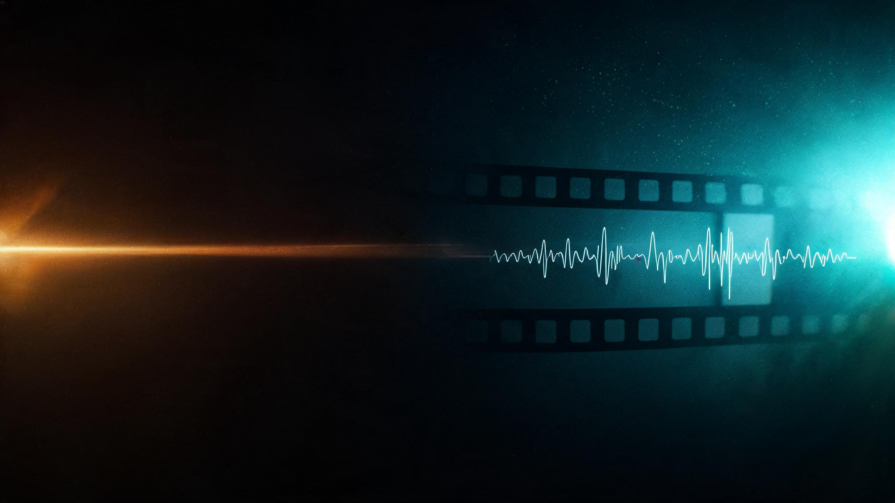
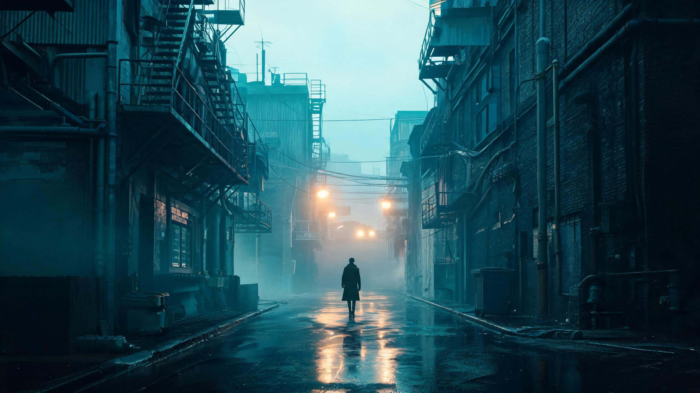
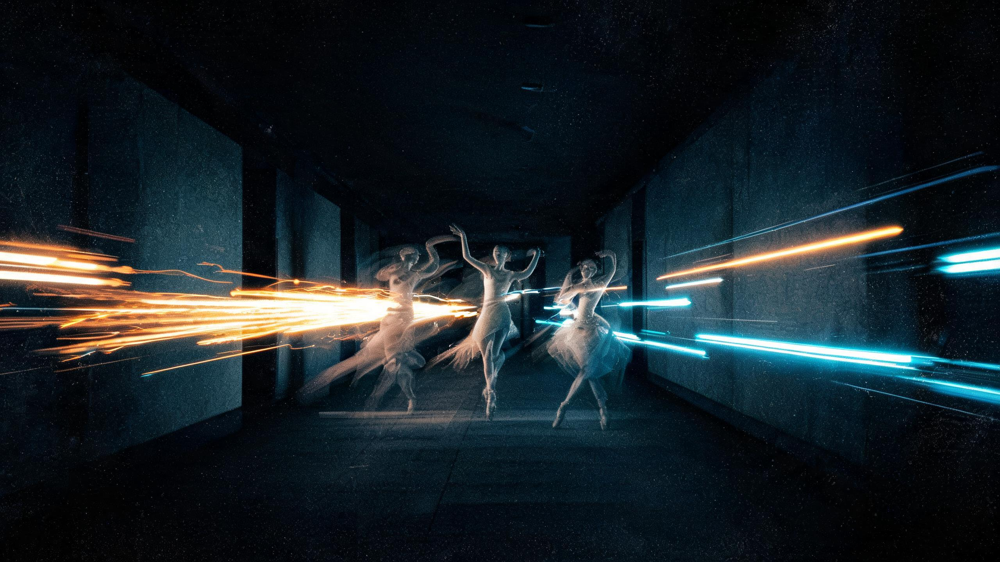

主体参考：把这个东西搬进另一个世界
上传产品、道具或角色的照片，只保留它本身，环境、光线、构图全部重写。商业图与海报最常用。

2026 秋季 · 传播学专业 · 48 学时 / 2 学分
从一句创意到一支短片：提示词、AI 图像、AI 视频、剪辑与声音的完整工作流。
COURSE PROFILE
48 学时里，一半时间在讲原理与案例，一半时间在机房把作品做出来。结课不是考试，是一支 60–90 秒的完整短片。
BASIC INFORMATION
ASSESSMENT
考勤 10% + 平时作业 20%（分镜脚本等）
60–90 秒 AI 短片 + 创作档案 + 阐述
评价看三件事：叙事是否成立、视听是否讲究、AI 是否被“用对”而非“用多”。
CHAPTERS · 点击卡片跳转
OUTCOMES
掌握 AI 绘图的原理与平台功能分区；理解数字美学、构图、色彩、短视频流程与关键词逻辑。
支撑毕业要求 2 / 3：人文社科基础与新闻传播理论
独立完成 AI 绘画与 AI 短视频；掌握关键词控画面、脚本、剪辑、生成等全流程技能，胜任多个岗位环节。
支撑毕业要求 4 / 5：问题分析与新媒体内容生产
在创作中体现积极健康的价值观，遵守知识产权与 AI 伦理，尊重原创与文化多样性。
支撑毕业要求 10：终身学习与职业发展
技术决定你“能不能做”，叙事决定别人“要不要看”。
COURSE MOTTOWHY NOW
过去两年，AIGC 从“能生成一张图”走到“能交付一条可用的片子”。对传播学学生，这意味着门槛降低、竞争点上移。
剪辑软件仍是基本功，但新增的核心能力是：把意图拆成可执行的提示词与参数。
图像、视频、配音、剪辑已被平台串成流水线。会串联的人，效率是会用单点工具的数倍。
素材不再稀缺，稀缺的是判断力：选哪个镜头、删哪一秒、说什么立场。
2026 行业观察
这节课的判断
AI 把“制作”的成本压到很低，却把“选择”的成本抬得很高。
所以本课的训练重点不是抽卡运气，而是：稳定的提示词方法、镜头语言、剪辑节奏与伦理判断。
CHAPTER ONE · 生成式人工智能概述
DEFINITION
生成式模型从海量数据中学到内容的概率分布，再根据你的提示，从这个分布里“采样”出新的图像、视频或文字。所以它每次结果都可能不同，也可能“编造”。
给数据贴标签：这是猫 / 不是猫。用于识别、审核、推荐。
从零产生新内容：图像、视频、文本、音乐、3D。用于创作。
一句话：判别式回答“是什么”，生成式回答“如果……会怎样”。
GENERATION PIPELINE · 生成链路
你描述意图：主体、动作、光线、风格
文本被映射进模型能理解的特征空间
从噪声逐步还原成图像或视频帧
挑片、改词、重绘，形成多轮循环
对创作者的关键含义：提示词是“概率空间的导航”，不是许愿池。
TIMELINE · 点击节点查看
SIX MODALITIES
输入一句需求，产出大纲、台词、分镜描述。代表：DeepSeek、豆包、Claude、GPT 系列。
本课用途：第3章创意与脚本
文生图、图生图、局部重绘。代表：即梦、Midjourney、SD/ComfyUI、Nano Banana。
本课用途：第4–5章
文生视频、图生视频、首尾帧控制。代表：即梦、可灵、Sora、Veo、Runway。
本课用途：第6–7章
TTS 语音合成、音乐生成、音效检索。代表：剪映 AI 配音、Suno、ElevenLabs。
本课用途：第8章
图生 3D、数字人播报、动作驱动。代表：各类 3D 生成与数字人平台。
拓展方向：虚拟制片
文本+图像+音频统一建模，可跨模态理解与生成。趋势：工作流被收进一个模型。
本课视角：导演式调度
注意：模态不是割裂的。一条短片通常是“文本 → 图像 → 视频 → 音频 → 剪辑”的串联。
APPLICATIONS
用 AI 生成示意图、时间线动画、数据可视化底图；突发事件的解释性短片。注意：新闻真实性优先，AI 图必须标注。
提案阶段用 AI 分镜快速对齐方向；投放阶段生成多套视觉与口播版本做 A/B 测试。
概念图、场景气氛、镜头运动预演，降低实拍试错成本；正片仍以实拍与后期为主。
口播脚本、封面、空镜、AI 配音、批量混剪。核心是“人设一致性”和“更新节奏”。
把抽象概念变成可看的情景短片；历史、科学、安全教育等题材的情景复原。
RISK & COMPLIANCE
换脸、克隆声音、伪造发言。对新闻与公共人物尤其危险。
生成结果的权利归属因平台条款而异；直接商用前必须核查授权。
模仿在世艺术家的独特风格、使用真人肖像与声音，都可能侵权。
模型会放大训练数据里的偏见：职业、性别、地域的默认想象。
三个自检问题
这是真的吗？这是谁的声音？我愿意在这张图上署名吗？
COMPLIANCE CHECKLIST
0 / 6课堂要求：大作业需附“素材来源与授权说明”，缺此项按规范项扣分。
CHAPTER TWO · 数字镜头语言
INTERACTIVE · 点击切换

画面框只在示意。真实拍摄中，景别由主体在画面中的占比决定，而不是由镜头焦段单独决定。
ANGLE & MOVEMENT
镜头与被摄体同高，最客观、最日常。适合访谈、纪实、对话。
AI 词：eye-level shot
从高处向下看，人物被压缩、显得弱小或被动。适合表现困境与无力感。
AI 词：high angle, top-down
从低处向上看，人物被放大、显得强势。适合英雄化、压迫感。
AI 词：low angle, worm's-eye view
地平线倾斜，制造失衡与不安。适合悬疑、心理波动。
AI 词：dutch angle, tilted frame
推近＝情绪收紧、注意力聚焦；拉远＝抽离、揭示环境。AI 视频里用 dolly in / dolly out。
AI 词：slow dolly in, pull back
摇是原地转，移是平行移动，跟是追随主体。三种运动都要求“路径清晰”。
AI 词：pan, tracking shot, follow
给 AI 的镜头词，优先用英文摄影术语
因为训练语料里，low angle / dutch angle / dolly zoom / tracking shot 这类词的画面关联更稳定；中文描述适合补充情绪与叙事。
STORYBOARD · 可直接编辑
一镜一行，写清“看到什么、听到什么、持续多久、能不能由 AI 生成”。表格内容可以直接改。
| 镜号 | 景别/角度 | 画面内容 | 台词 · 音效 · 音乐 | 时长 | AI 可行性 |
|---|---|---|---|---|---|
| 01 | 远景 / 平视 | 凌晨四点的空街，路灯把雨照成金色，一个橙色身影从画面深处走来。 | 环境雨声、远处扫帚摩擦地面 | 6s | 可生成 |
| 02 | 特写 / 俯拍 | 冻红的双手握紧扫帚柄，指节发白，水珠顺着指缝落下。 | 呼吸声渐近，雨声压低 | 4s | 可生成 |
| 03 | 中景 / 仰拍 | 他抬头看向写字楼亮着的窗，玻璃上映出自己的脸。 | 音乐第一次进入，钢琴单音 | 5s | 需参考图 |
一镜一个动作，不要把“走过来+抬头+点烟”塞进同一个镜头。
AI 单镜头建议 3–6 秒；更长的连续动作拆成多段再剪。
先写声音再写画面，节奏会自然很多。
预埋转场：上一镜的结束动作 = 下一镜的开始动作。
标注“可生成 / 需参考图 / 需实拍”，拍摄前就知道风险。
提交一份不少于 8 镜的文字分镜脚本（PDF）。
CHAPTER THREE · AI 辅助创意与脚本
CREATIVE CORE
洞察
反差
情感
可传播的创意
拍老人第一次用手机挂号：手指悬在屏幕上不敢落下。反差不在“老”，在“谨慎与勇敢”。
AI 能做什么：生成大量生活场景空镜，补足实拍不足的细节。
跟随环卫工、夜班护士、便利店店员，用同一时间点串起三种人生。
AI 能做什么：统一色调与镜头风格，保证不同场景的视觉连续性。
把剪纸纹样变成动态视觉，让传统纹样出现在年轻人的屏幕上。
AI 能做什么：风格迁移、纹样延展、动态化，但纹样考据必须由人把关。
AI 能生成画面，生成不了你的立场。
PROMPT ANATOMY · 点击色块
ROLE · 角色
常见错误
“帮我写个分镜”，没有身份、没有篇幅、没有受众，模型只能给通用模板。
改写示例
“你是纪录片导演，请给我 3 个 30 秒开场方案……”
提示词不是越长越好：每个零件都要承担一个明确的功能，重复的信息会互相稀释。
FROM ONE SENTENCE TO STORYBOARD
| 镜 | 景别 | 画面 | 时长 |
|---|---|---|---|
| 01 | 大远景 | 城市还没醒，只有街灯和雨。 | 3s |
| 02 | 中景 | 老周推着车，扫帚划过水面，倒影碎开又合上。 | 5s |
| 03 | 特写 | 他停在咖啡馆门口，玻璃上是他的脸和里面的热气。 | 4s |
| 04 | 近景 | 他抬手，又放下。转身继续扫。 | 3s |
| 05 | 大远景 | 天亮，街道干净，那杯咖啡还冒着热气。 | 5s |
模型最容易犯的三个错
1. 一镜塞三个动作 2. 给每镜都写台词 3. 结尾一定要“升华”。
人的工作是：删掉第二个动作、砍掉台词、把升华换成具体细节。
CHAPTER FOUR · 主流 AI 绘图平台实战
TOOL LANDSCAPE
| 平台 | 类型 | 最强项 | 本课用途 | 注意 |
|---|---|---|---|---|
| 即梦 AI（字节） | 图像 + 视频 | 中文提示词友好；智能画布、图生视频链路完整 | 第 4–7 章主力平台 | 积分消耗；商用授权需确认 |
| 可灵 AI（快手） | 视频 | 运动幅度大、首尾帧控制、物理一致性较好 | 第 6–7 章视频生成 | 长镜头与高分辨率成本较高 |
| Sora（OpenAI） | 视频 | 复杂场景理解与镜头语言，适合拉片学习 | 参考与案例分析 | 访问与合规要求需注意 |
| Veo（Google） | 视频 | 高质量短片，画面与声音一体化生成 | 参考与效果对标 | 地区可用性差异 |
| Runway | 视频 + 特效 | 运镜控制、视频编辑与风格化工具成熟 | 参考 / 特效镜头 | 订阅成本较高 |
| Midjourney | 图像 | 风格化与美学上限高，适合做视觉参考 | 第 5 章风格锚定 | 英文提示词为主，无免费额度 |
| Stable Diffusion / ComfyUI | 图像 | 本地部署、节点式工作流，可控性最强 | 进阶 / 批量生产 | 学习曲线陡，需硬件 |
| Nano Banana（Gemini） | 图像 | 指令式编辑、角色与物体一致性表现好 | 第 5 章图生图 | 商用条款需逐条确认 |
| DeepSeek | 文本 | 中文创意、脚本、分镜与逻辑梳理 | 第 3 章主力工具 | 输出需人工改写，避免“模型腔” |
| 剪映 | 剪辑 + AI | AI 配音、配乐、字幕、成片导出，门槛低 | 第 8–9 章合成 | 内置音乐与素材需注意版权 |
课堂原则：主平台练深（即梦 + 剪映 + DeepSeek），其他平台只做对标。工具会变，方法不会。
HANDS-ON · 点选生成你的提示词
提示词顺序建议：主体 → 动作 → 环境 → 镜头 → 光线 → 色调 → 风格 → 画幅
穿深色大衣的年轻人，站在雨后的老街口，中景，侧逆光，青橙色调，35mm 胶片质感，--ar 16:9
负面提示词：low quality, extra fingers, deformed face, text watermark, oversaturated, duplicated limbs
ADVANCED PROMPTING
常用写法：(逆光的发丝:1.3) 或 主体::1.2 背景::0.8。权重不是越高越好，超过 1.5 容易画面崩坏。
适用：主体被背景吃掉、细节不够突出时。
固定一套“体检词”：多余手指、畸形脸、文字水印、过饱和、重复肢体。--no text, extra fingers 类语法因平台而异。
适用：人物肖像、手部、产品图。
“高级感”太虚；“Kodak Portra 400, soft grain, warm highlights”很实。可用胶片型号、镜头焦段、布光方式、画派。
适用：需要统一整组画面风格时。
固定 seed 可以让同一构图微调提示词；批量出图再挑选，比反复改词更快。seed: 20261030
适用：角色一致性、系列分镜。
提示词体检表 · 出图前问自己 5 个问题
同义反复是效率杀手：“非常非常电影感、超高清、史诗级、大师作品”堆在一起，模型只会挑最响的那个词。
CHAPTER FIVE · 图生图 · IMAGE TO IMAGE
CLICK TO COMPARE
参考图不是“让它照着画”，而是告诉模型哪些信息不许变。
上：参考强度 下：成图
一致性铁律 · 一组图要用同一张参考，并且逐张迭代，不要每张都重新许愿
DRAG THE SLIDER
适合改色调、加天气、换局部细节。想换构图基本无效。
最常用区间：主体和构图还在，光影、材质、氛围按提示词重写。
构图和主体都可能被改写，只剩色调或气质。适合找灵感，不适合保一致性。
当前建议
主体还在、质感已变。想保住人物脸，就再往下调 10–15；想换整张画风，就往上推。
CHAPTER SIX · 智能画布与视频生成
FOUR OPERATIONS · 点击切换
生成只是开始，改得动才是生产力。
框选一块区域，只重写框里内容，框外的像素一个都不动——这是“改稿”与“重新生成”的本质区别。
改表情、换衣服、换道具。蒙版边缘要留一点余量。
向外补画，把竖图变横图、把小图变海报。
去掉路人、电线、水印。复杂纹理处要多次小范围修。
主体分离后接产品图、合成海报、做分层素材。
顺序很重要
先扩图定画幅 → 再消除杂物 → 再局部重绘细节 → 最后抠图做合成。顺序反了，前面全白改。
CINEMATIC PROMPTING
FORMULA · 可直接套用
[主体] + [动作] + [环境/时间]
+ [景别/机位] + [镜头运动]
+ [光线/色调] + [时长/画幅]
| 参数 | 课堂建议值 | 说明 |
|---|---|---|
| 单段时长 | 3–5s | 越长越容易变形 |
| 画幅 | 16:9 / 9:16 | 按发布平台定 |
| 运动强度 | 中低 | 高值容易糊与扭曲 |
| 首尾帧 | 能定就定 | 可控性提升最明显 |
三个高频翻车
① 一镜两个动作 ② 同时写推进+摇镜+跟拍 ③ 人物回头说话（口型与手部最易崩）
FIRST FRAME FIRST

FIRST FRAME · 首帧定调决定人物长相、服装、光线、构图。先出图，再动。
可选的“落点”。首尾都给，运动路径最稳。
图生视频的提示词只写“怎么动”，不要再重复描述画面里已经有的东西。
避坑
① 首帧就糊 → 视频一定糊 ② 动作幅度过大 → 肢体扭曲 ③ 人物正脸开口说话 → 口型对不上，改用侧脸或背影
CHAPTER SEVEN · 非常规镜头
SEVEN SPECIAL SHOTS · 点击左侧
每个非常规镜头只承担一个叙事目的，不要同时又想炫技又想交代信息。
先写“为什么这场戏必须这样拍”，再打开生成平台。理由说不出来，就别用。
观众第一秒看不懂的镜头，要么再给一个解释镜头，要么删掉。
ONE SCENE · FOUR BEATS
调度不是“把机器放哪儿”，而是按顺序告诉观众该看什么。
上一镜人物看向画右，下一镜的视觉重心就放在画右，观众的眼睛不用重新找。
连续两个运动镜头会累；一动一静，节奏才有呼吸。
人物从左往右走，后面几镜保持同一方向，否则观众会以为“他又回去了”。
用 AI 生成时，把“视线方向、人物朝向、光线方向”写进提示词，多镜头才能接得上。
CHAPTER EIGHT · 传统剪辑与 AI 素材合成
ASSEMBLY LINE
导出建议
竖屏 1080×1920 / 30fps / H.264 / AAC 192–320kbps。交作业别用“高清但 60fps 卡顿”的配置，稳定比参数好看重要。
VOICE · MUSIC · SFX
剪映文本朗读可选音色与语速。先写短句、多留停顿，合成后再手动删掉机械的重音。
按情绪选风格，不要按“好听”选。音乐要服务段落，副歌不该压在信息点上。
雨声、脚步、关门，是“画面可信”的最后一层。缺环境音的 AI 视频会显得假。
THREE TRACKS · 拖动调音量
人声始终最高，音乐在说话时自动让位（ducking）。
先声后画。先定声音节奏，再回头调整镜头长度，比反过来快得多。
一段一条音乐。60 秒片子换 3 首音乐，观众会以为在看混剪。
留 2 秒安静。在最想让人停下来的地方抽掉声音，比加音效更有力。
CHAPTER NINE · 剪辑手法与转场
SOUND BRIDGE · 点击切换
画面还在街上，门内的说话声已经响起，观众会先“听见”下一个空间，再“看见”它。用于预告、悬念、转场。
画面已经切到门内，街上的雨声还延续了两秒，空间因此连续。访谈剪辑最常用。
硬切：画面与声音同时切换，最直接，也最容易显得生硬。
THREE WAYS TO CUT
两个镜头里出现同一形状、同一动作、同一构图，观众会自动把两段时间连起来。例：抛起的硬币 → 落下的月亮。
AI 用法：用一张图的两个局部做“形状匹配”，成本最低。
人物位置突然前移、动作被掐断，制造焦虑、流逝与不适。适合短视频的“加速叙事”。
AI 用法：同首帧生成多条，中间剪掉 0.5 秒。
一条线在赶路，一条线在倒计时。切得越接近终点，张力越大。结尾必须让两条线相遇。
AI 用法：先分别生成两条线，再在时间线上交替。
切点自检 · 按下剪刀前问三句
观众此刻在看哪里？他接下来会想问什么？这一刀回答了吗？
最容易被忽略的一条：切在动作中间，比切在动作结束后更顺。这叫“动作接动作”。
CRAFTED VS INVISIBLE
技巧性转场 · 看得见
适合段落切换无技巧转场 · 看不见
推荐优先使用决策清单
AI 素材拼贴的通病：每两镜之间都想加特效。真正的问题是——这两个镜头本来就不该挨在一起。
60–90 SECONDS · FOUR PHASES
要求：60–90 秒完整短片（9:16 或 16:9）＋ 创作档案 ＋ 3 分钟创作阐述。题材自选，但必须有一个“你真正在意的问题”。
MP4，1080p，60–90 秒，含字幕。
分镜脚本、关键提示词、参考图、修改记录（截图或文字均可）。
3 分钟口述或 800 字：为什么这样拍、AI 用在哪、哪里刻意没用 AI。
100 POINTS · 5 DIMENSIONS
| 维度 | 权重 | 看什么 | 常见失分 |
|---|---|---|---|
| 叙事与创意 | 25 | 有没有一个说得出的人和问题；结尾是否成立 | 堆画面、无人物、结尾强行升华 |
| 视听语言 | 25 | 景别与角度的选择理由、镜头连续性、声音设计 | 全靠特写、方向跳轴、没有环境音 |
| AI 运用合理性 | 20 | 该用 AI 的地方用对了；不该用的地方克制 | 全片抽卡、人物每镜换脸、口型崩坏 |
| 完成度与技术 | 20 | 节奏、调色统一、字幕规范、导出参数 | 素材质感割裂、字幕错位、音量失衡 |
| 创作档案 | 10 | 分镜、提示词、修改记录是否可复现 | 只有成片、无过程；提示词全删 |
加分
有一个只有你能拍到的细节；主动标注 AI 的边界与取舍。
扣分
直接使用他人素材未标注；明显由模型代写阐述。
不及格线
无完整叙事；成片不足 45 秒；无创作档案。
6 QUESTIONS · 点击选项
SAVE THIS PAGE
01 · TOOLS
02 · TEMPLATES
图：主体+动作+环境+景别+光线+色调+--ar
视频：主体+一个动作+环境+运镜+时长
分镜：镜号/景别/画面/声音/时长/可行性
03 · GLOSSARY
课件操作
提示词与分镜模板建议复制到自己的笔记里，每做一条片子，就往模板里加一条自己的经验。
THAT'S A WRAP
这门课教你的不是几个平台的按钮，而是一套方法：
把想法写成别人看得懂的语言，再调度工具把它做出来。